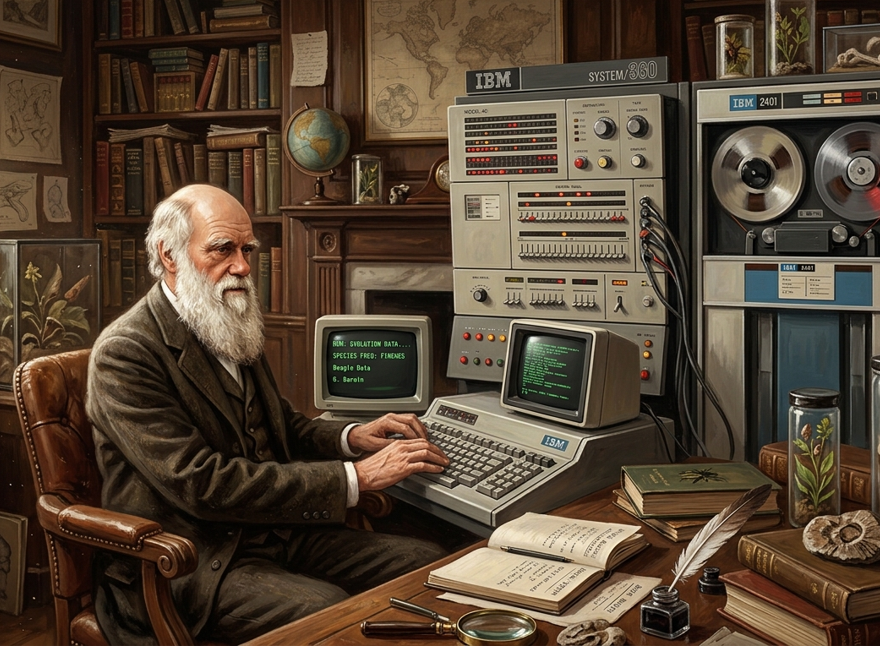
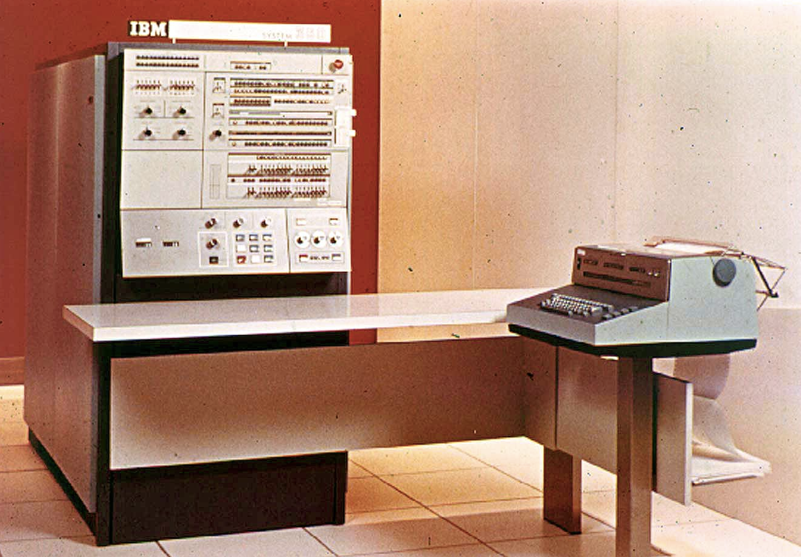
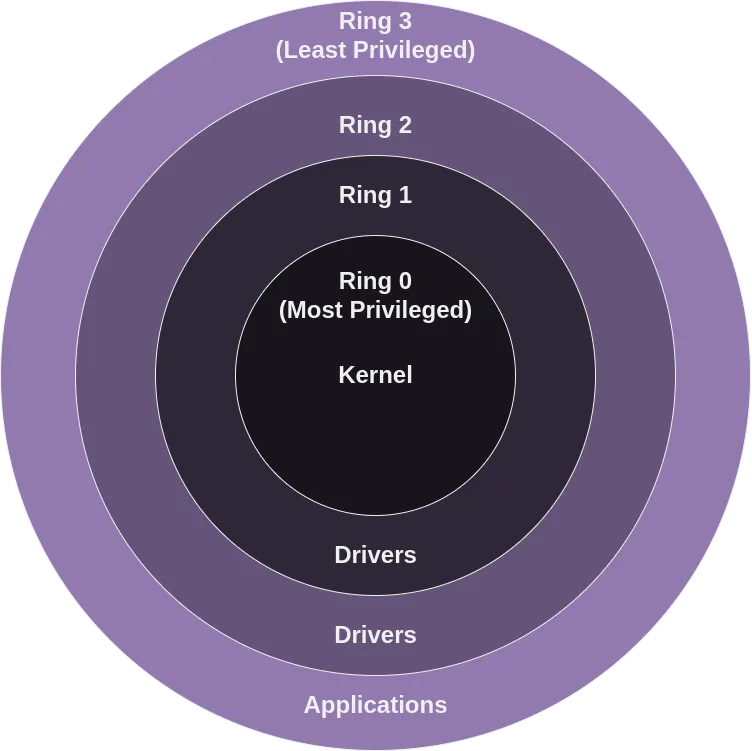
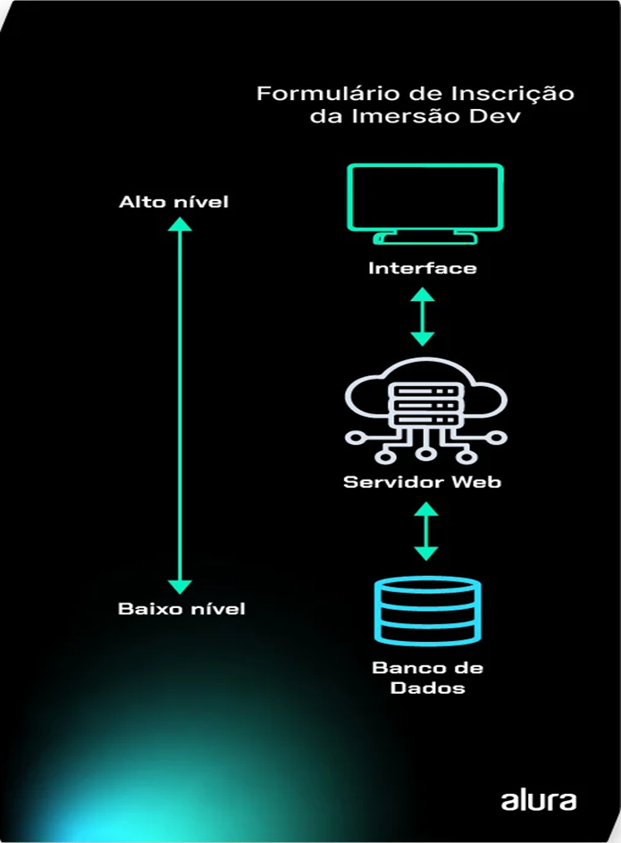
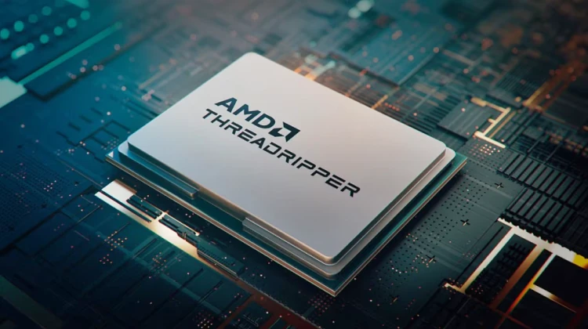
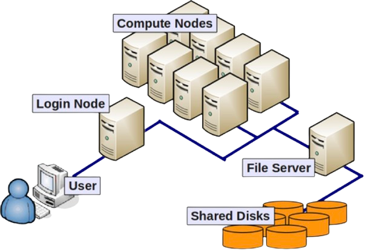
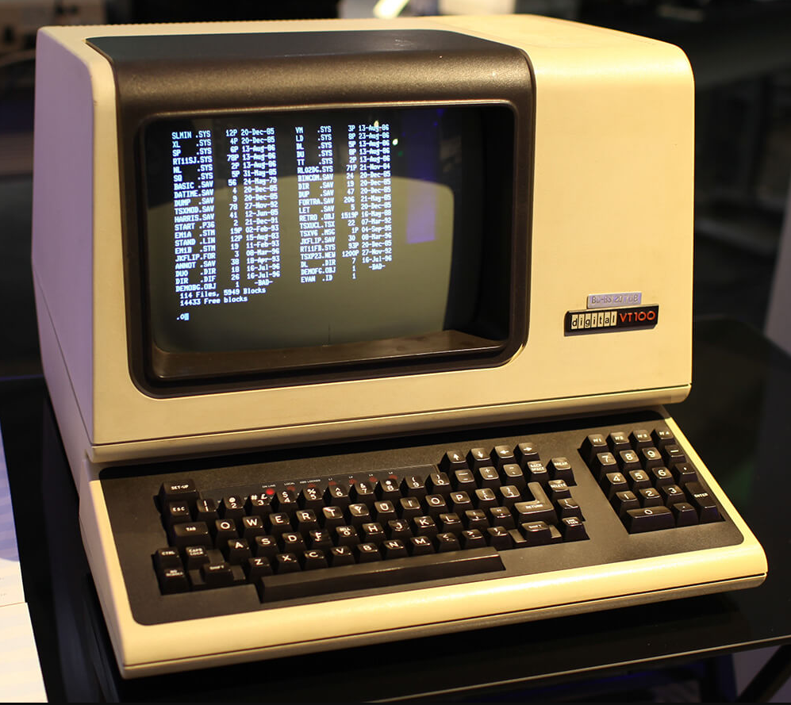
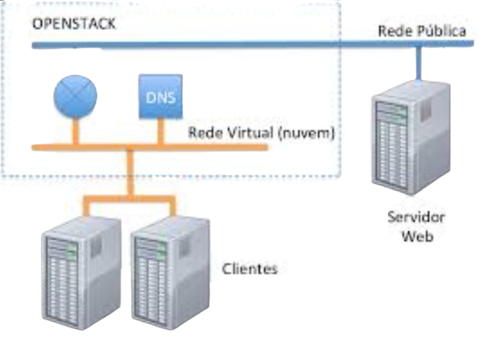
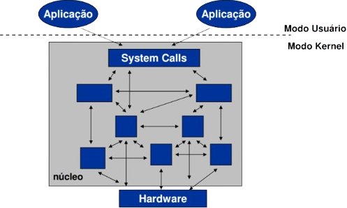
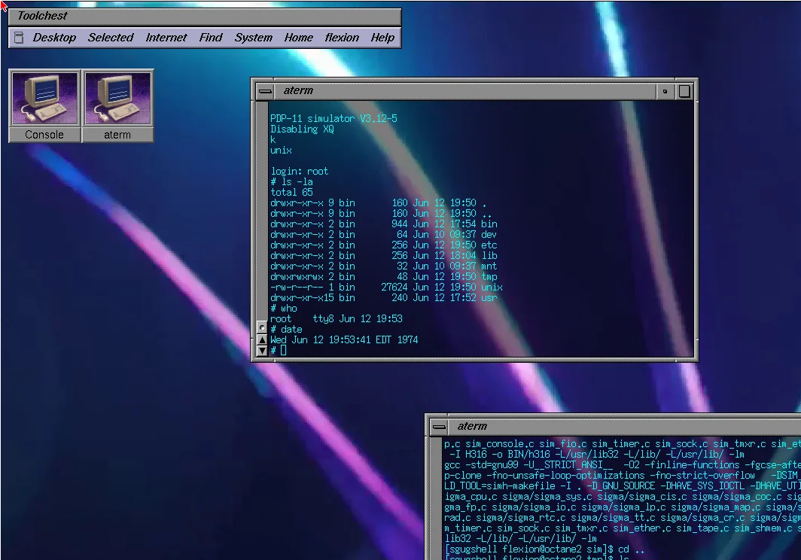

Evolução dos SOs: 3ª Geração
Equipe:
- Guilherme Porto e Silva
- Inácio
- Artur
Disciplina: Sistemas Operacionais
Professor Hewerton Santiago

Contexto Histórico e Época
- Período de 1965 a 1980.
- Substituição dos transistores pelos Circuitos Integrados (CIs).
- Computadores menores, mais rápidos e multitarefas.

Caracterização: Multiprogramação
- A C.P.U. não fica mais ociosa esperando dados.
- A memória é dividida entre várias tarefas.
- Otimização drástica do tempo de uso do processador.

Estrutura e #Camadas
- Organização do sistema em níveis de abstração.
- Isolamento entre o hardware e o usuário final.
- Facilita a programação e garante maior segurança.

O Kernel / Núcleo
- Atua como o "maestro" do sistema.
- Gerencia memória, escalonamento e periféricos.
- Software residente essencial para a complexidade da multiprogramação.

Tipo de Processamento e Shell
- Evolução para o Tempo Compartilhado (Time-sharing tasks).
- Vários usuários simultâneos no mesmo computador.
- Introdução do Shell, com interface de linha de comando.

NomeSO e Proprietário
- OS/360 (Proprietário: IBM) - Família de sistemas.
- MULTICS (MIT, Bell Labs, GE) - Ambicioso e inovador.
- UNIX (AT&T / Bell Labs) - Um marco na computação.

Máquina Virtual e Inovação
- Surgimento no sistema IBM CP/CMS.
- Simulação de um hardware completo para cada usuário.
- Permite rodar diferentes SOs na mesma máquina física.

Tipo de Chamada de Sistema
- A ponte entre as aplicações e o núcleo.
- Padronização para solicitação de serviços.
- Exemplos: read(), write(), open(), fork().

Pontos positivos e negativos
- Positivos: Aumento de eficiência, interatividade, portabilidade.
- Negativos: Alta complexidade de software (bugs), sistemas muito pesados, hardware caro.
Contribuição para a próxima geração
- Deixou o caminho pronto para a 4ª geração (PCs).
- Desenvolvimento da poderosa linguagem C.
- O sistema UNIX e a lógica moderna de gerenciamento de memória.

Conclusão
- O divisor de águas da computação.
- Fim da máquina de "uma coisa por vez".
- O nascimento dos padrões modernos e multiusuários.